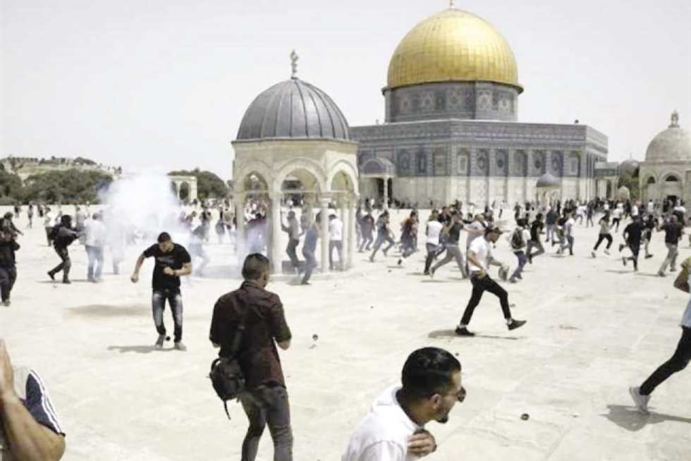
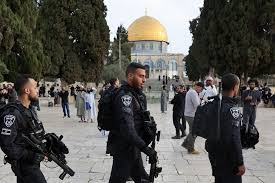

تعرضت مدینة القدس ومقدساتھا الإسلامیة والمسیحیة بشكل عام ، والمسجد الأقصى بشكل خاص خلال العام المنصرم 2008 م الى ھجمة شرسة من قبل المؤسسة الإسرائیلیة وأذرعھا المختلفة ، وطالتی الإحتلال الإسرائیلي الإنسان والآثار ، التاریخ والحضارة ، الحاضر والماضي ، وحاولت المؤسسة الإسرائیلیة فرض وقائع على الأرض ، تسابق الزمن في تصارع ملفت للنظر ، تنفد مشاریع السیطرة والتھوید ، وتضع المخططات الشاملة وتتدرج بإخراجھا الى حیّز التنفى الأمر الذي یشیر أن مدینة القدس الشریف والمسجد الأقصى مقبلة على مستقبل من الإستھداف الخبیث والخطیر .
تصاعدت بشكل ملحوظ في ھذا العام خاصة في النصف الثاني من عام 2008 م ظاھرة إقتحام مجموعات یھودیة للمسجد الأقصى المبارك ، رجالاً ونساءً وأطفالاً، مع تنظیم وإقامة شعائر دینیة یھودیة بارزة داخل المسجد الأقصى ، تتضمن قراءة أجزاء من "التاناخ " ، ویلحظ إقامة شعائر أخرى بحسب مسار محدد في أجزاء من المسجد الأقصى المبارك ، ومن ضمن من أخذوا حظا في إقامة مثل ھذه الشعائر أحد المتطرفین الیھود المدعو " یھودا عتصیون " وھو أحد المتھم ین بالتخطیط للقی ام بعملی اتتفجی روھدم للمسجد الأقصى المبارك ، طبعا وكل ذلك بمباركة وحراسة مشددة من قبل الشرطة الإسرائیلیة .
بینما كانت المجموعات التي تقتحم المسجد الأقصى لا تتعدى الأفراد القلائل ، أصبحت الظاھرة البارزة ھي أن الإقتحامات تتم بصورة مئات الأفراد ، وھذه المئات تأتي على شكل مجموع ات متتالیة ، كم اصبح یشارك بشكل بارز عدد كبیر من الساسة الإسرائیلیین ، مما یشیر الى دعم ومشاركة المؤسسة الإسرائیلیة الرسمیة لمثل ھذه الإقتحامات .
تعكف المؤسسة الإسرائیلیة على إنھاء كنیس یھودي بإسم " ھحوربا " أقامته على أرض وقفیة وعلى حساب جزء من المسجد العمري فیما كان یعرف بحي الشرف ، في قلب البلدة القدیمة للقدس ، ویھدف بناء ھذا الكنیس العالي ، والذي یعتليه قبة كبیرة الى محاولة إستنبات ابنیة یھودیة في القدس ، وبھدف تغطیة المعلم الإسلامي البارز الا ھو قبة الصخرة المشرفة .